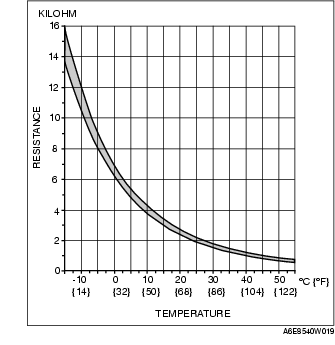

Evaporator temperature sensor inspection
1. Set the temperature control at MAX COLD (Turn the left).
2. Turn the A/C switch.
3. Set the RECIRCULATE mode.
4. Close all doors and windows.
5. Wait for 5 min.
6. Remove the glove compartment.
7. Disconnect the evaporator temperature sensor.
8. Measure the temperature at the blower inlet.
9. Measure the resistance between terminals of the evaporator temperature sensor.
